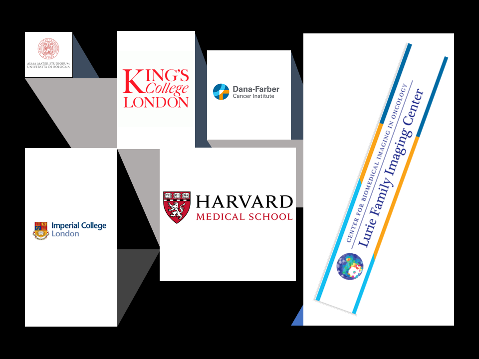

Virtual assistant introduction
Curriculum Vitae
Dr. Andrea Protti
PhD in Biomedical Engineering and Physics, MSc. in Radiation Physics with Medical Applications. Experienced pre-clinical Imaging Scientist with a strong background in image processing analysis. Skilled in a variety of imaging modalities including MRI, PET and CT. Strong programming skills in Phyton and MATLAB. More than ten years research experience in highly ranked international universities and private centres investigating oncological, cardiovascular, inflammatory diseases (pre-clinically and clinically) and related analysis methods.
1. Academic and Professional experience
Senior Imaging Scientist
Department of Imaging, Dana-Farber, Lurie Family Imaging Centre for Biomedical Imaging in Oncology. Research Associate, Harvard Medical School. Scientist II
Subject: Imaging Data mining in Oncology
Nov 2023 - to date
Imaging Scientist
Department of Imaging, Dana-Farber, Lurie Family Imaging Centre for Biomedical Imaging in Oncology. Research Associate, Harvard Medical School. Scientist II
Subject: Imaging Data mining in Oncology
Nov 2015 - Feb 2023
Senior MRI Physicist at High Field
King’s College London BHF Centre of Excellence, Cardiovascular Division and Division of Imaging Sciences & Biomedical Engineering
Subject: Cardiac Magnetic Resonance Imaging (CMRI)
Sponsor: British Heart Foundation (BHF)
Aug 2012 - Oct 2015
Postdoctoral Research Associate
King’s College London BHF Centre of Excellence, Cardiovascular Division and Division of Imaging Sciences & Biomedical Engineering
Subject: Cardiac Magnetic Resonance Imaging (CMRI)
Sponsor: British Heart Foundation (BHF)
July 2008 - Aug 2012
Postdoctoral Research Associate
Imperial College London, Division of Imaging Sciences & Biomedical Engineering
Subject: Cardiac Magnetic Resonance Imaging (CMRI)
Sponsor: Medical Research Centre (MRC) and British Heart Foundation (BHF)
Jan 2008 - June 2008
Ph.D. student
Imperial College London, Division of Imaging Sciences & Biomedical Engineering
PhD thesis: “The development and application of in vivo ultra-short TE (UTE) imaging technique at high field”
Subject: Magnetic Resonance Imaging (MRI)
Sponsor: Medical Research Centre (MRC) and AstraZeneca
Jan 2005 - Jan 2008
University degree thesis
In collaboration with H.H.Wills Physics Laboratory (Bristol University, UK)
Subject: Solid State of Matter, Nanostructure of Matter
Sep 2001 - July 2002
2. Qualifications
PhD: Biomedical Engineering and Physics
Imperial College London, Division of Imaging Sciences & Biomedical Engineering
2005 - 2008
MSc: Radiation Physics with Medical Applications
University College London, Department of Medical Physics and Bioengineering
2003 - 2004
University degree: Physics
Universita’ degli studi di Bologna, faculty of Scienze Naturali Fisica Matematica Department of physics "Augusto Righi"
1998 - 2003
3. Transferable skills
• Computer programming : Python , C++ , MATLAB , SQL , Tableu
• Software main investigator : ClinicalVolumes
• Statistical analysis : SPSS , R, Excel
• MRI pulse programming : Bruker, Agilent (Varian), Philips
• Project management
• Staff and student supervision
• Negotiation and communication skills
• Scientific writing and presentations
4. Certificate
2022 Collaborative Data Science for Healthcare
2020 Introduction to Tablaeu DavidsonX-EDX
2020 Introduction to SQL DavidsonX-EDX
2019 Machine Learning Fundamentals UCSanDiegoX-EDX
2019 Deep Learning with Python and PyTorch IBM-EDX
2019 Pyton for Data Science UCSanDiegoX-EDX
2017 Marketing Management UBC Sauder School of Business
2017 Introduction to marketing UBC Sauder School of Business
2011 Financial Engineering with C++ City University of London
5. Grant awarded
2014 Guy’s and St Thomas Charity (GSTC) Health Innovations Ltd Project: ClinicalVolumes analysis software (Dr A. Protti, Prof A. Shah, Prof R. M. Botnar)
2013 British Heart Foundation (BHF) Ph.D. student project: F19 MRI investigation of inflammation in mouse model of infarction (investigator Prof A. Shah, Prof R. M. Botnar, Dr A. Protti, Dr A. Phinikaridou)
2012 Medical Engineering Centres (MEC) Project: F19 coil for 3T Philips scanner (investigator Prof A. Shah, Prof R. M. Botnar, Dr A. Protti, Dr A. Phinikaridou)
2012 Guy’s and St Thomas Charity (GSTC) Health Innovations Ltd Project: Analysis software developments (main investigator)
2009 British Heart Foundation (BHF) Pump-Priming Project: VCAM1 contrast agent for the investigation of inflammation in mouse model of infarction (investigator Prof A. Shah, Prof R. M. Botnar, Prof P Blower , Dr A. Protti)
6. Referees/Employers
Associate Professor Annick D. Van Den Anneele
MD, FACR, Radiology, Harvard Medical School. Chief Department of Imaging, Dana-Farber Cancer Institute. Founding Director, Centre for Biomedical Imaging in Oncology (CBIO), Imaging, Dana-Farber Cancer Institute. Phone: 617-632-2595 email: abbeele@dfci.harvard.edu
Dr Quang-De Nguyen
PhD, Director, Lurie Family Imaging Center, Senior Scientist, Center for Biomedical Imaging in Oncology. Research Associate in Radiology, Harvard Medical School. Department of Imaging, Dana-farber Cancer Institute. Phone: 617-632-6578 email: quang-de_nguyen@dfci.harvard.edu
7. Languages
English , Italian , Spanish (intermediate level)
8. Publications
First author:
1. Virani N, Kwon J, Zhou H, Mason R, Berbeco R, and Protti A. In vivo Hypoxia Characterization using Blood Oxygen Level Dependent Magnetic Resonance Imaging in a Preclinical Glioblastoma Mouse Model. Magnetic Resonance Imaging 2021 Feb.
2. Protti A, Jones KL, Nguyen QD. Predicting glioblastoma tumor area in mouse by the use of deep learning CNN U-net: from data acquisition to data analysis. Currently under review at Computers Methods and Programs in Biomedicine.
3. Virani N, Kwon J, Zhou H, Mason R, Berbeco R, and Protti A. In vivo Hypoxia Characterization using Blood Oxygen Level Dependent Magnetic Resonance Imaging in a Preclinical Glioblastoma Mouse Model. Magnetic Resonance Imaging 2021 Feb.
4. Protti A, Jones KL, Bonal DM , Qin L, Politi LS, Kravets S, Nguyen QD, Van den Abbeele AD. Development and validation of a new MRI simulation technique that can reliably estimate optimal in vivo scanning parameters in a glioblastoma murine model. PLOSOne 2018 June.
5. Protti A, Lavin B, Lorrio L, Dong X, Phinikaridou A, Botnar RM, Shah AM. MRI with gadofosveset: A potential marker for permeability in myocardial infarction. Artherosclerosis. 2018 April.
6. Protti A, Mongue-Din H, Mylonas KJ, Sirker A, Sag CM, Swim MM, Maier L, Sawyer G, Dong X, Botnar R, Salisbury J, Gray GA, Shah AM. Bone marrow transplantation modulates tissue macrophage phenotype and enhances cardiac recovery after subsequent acute myocardial infarction. J Mol Cell Cardiol. 2016 Jan;90:120-8.
7. Protti A, Lavin B, Dong X, Lorrio S, Robinson S, Onthank D, Shah AM, Botnar RM. Assessment of Myocardial Remodeling Using an Elastin/Tropoelastin Specific Agent with High Field Magnetic Resonance Imaging (MRI). J Am Heart Assoc. 2015 Aug 13;4(8).
8. Protti A, Dong X, Andia ME, Yu B, Dokukina K, Chaubey S, Phinikaridou A, Vizcay-Barrena G, Taupitz M, Botnar RM, Shah AM. Assessment of inflammation with a very small iron-oxide particle in a murine model of reperfused myocardial infarction. J Magn Reson Imaging. 2014 Mar; 39(3): 598-608.
9. Protti A, Dong X, Sirker A, Botnar R, Shah AM. MRI-based prediction of adverse cardiac remodeling after murine myocardial infarction. Am J Physiol Heart Circ Physiol. 2012 Aug 1;303(3):H309-14.
10. Protti A, Sirker A, Shah AM, Botnar R. Late gadolinium enhancement of acute myocardial infarction in mice at 7T: cine-FLASH versus inversion recovery. J Magn Reson Imaging. 2010 Oct; 32(4):878-86.
11. Protti A, Herlihy A, Tessier J, So PW, Kalber T and Bell J. Diagonal-SPRITE and Its Applications for In Vivo Imaging at High Field. The Open Magnetic Resonance Journal, 2009, 2, 1-7.
Co-author:
1. Silvia Cellone Trevelin, Can Martin Sag, Min Zhang, Jose´ Carlos Alves-Filho, Thiago Mattar Cunha, Ce´lio Xavier dos Santos, Greta Sawyer, Thomas Murray, Alison Brewer, Francisco Rafael Martins Laurindo, Andrea Protti, Lucia Rossetti Lopes,jj Aleksandar Ivetic, Fernando Queiroz Cunha, and Ajay M. Sha. ENDOTHELIAL NOX2 LIMITS SYSTEMIC INFLAMMATION AND HYPOTENSION IN ENDOTOXEMIA BY CONTROLLING EXPRESSION OF TOLL-LIKE RECEPTOR 4. Shock, 2021 Aug. Vol. 56, No. 2, pp. 268–277
2. Elkenhans B, Protti A, Shah AM, Onthank D, Botnar RM. Visualization of elastin using cardiac magnetic resonance imaging after myocardial infarction as inflammatory response. Scientific Reports, 2021 May. 11(1).
3. Chowdhury RA, Debney MT, Protti A., Handa BS, Patel KHK, Lyon AR , Shah AM, Ng FS, Peters N. Rotigaptide Infusion for the First 7 Days After Myocardial Infarction–Reperfusion Reduced Late Complexity of Myocardial Architecture of the Healing Border‐Zone and Arrhythmia Inducibility. Journal of the American Heart Association, 2021 March. 10(9).
4. Mueller R, Moreau M, Yasmin-Karim S, Protti A, Tillement O, Berbeco R, Hesser J, Ngwa W. Imaging and Characterization of Sustained Gadolinium Nanoparticle Release from Next Generation Radiotherapy Biomaterial. Nanomaterials, 2020 Feb. 10(11):2249.
5. D. Brayson, A. Frustaci, R. Verardo, C. Chimenti, M. A. Russo, R. Hayward, S. Ahmad, G. Vizcay-Barrena, A. Protti, P. S. Zammit, C. G. dos Remedios, E. Ehler, A. M. Shah, and C M. Shanahan. Prelamin A mediates myocardial inflammation in dilated and HIV-associated cardiomyopathies. JCI Insight, 2019. 14;4(22).
6. Kunjachan S, Kotb S, Kumar R, Pola R, Pechar M, Gremse F, Taleeli R, Trichard F, Motto-Ros V, Sancey L, Detappe A, Protti A, Shanmugam I, Ireland T, Etrych T, Sridhar S, Tillement O, Makrigiorgos MG, Berbeco R. Selective Priming of Tumor Blood Vessels by Radiation Therapy Enhances Nanodrug Delivery. Sci Rep, 2019. 9(1): p. 15844.
7. A. Detappe, M. Reidy, Y. Yu, C. Mathieu, H. Nguyen, T. Coroller, F. Lam, P. Jarolim, P. Harvey, A. Protti, Q. Nguyen, J. A. Johnson, Y. Cremilleux, O. Tillement, I. Ghobrial and P. P. Ghoroghchian. Antibody-targeting of ultra-small nanoparticles enhances imaging sensitivity and enables longitudinal tracking of multiple myeloma. Nanoscale, 2019. 11(43): p. 20485-20496.
8. Maryam Nezafat M, Ramos IT, Henningsson M, Protti A, Basha T, Botnar RM. Improved segmented modified Look-Locker inversion recovery T1 mapping sequence in mice. PlOS|ONE. 2017 PLoS One, 2017. 12(11): p. e0187621.
9. Sag CM, Schnelle M, MD, Zhang J, Murdoch CE, Kossmann S, Protti A, Santos C, Sawyer G, Zhang X, Mongue-Din H, Richards DA, Brewer AC, Prysyazhna O, Maier LS, Wenzel P, Eaton PJ, Shah AM. Distinct Regulatory Effects of Myeloid Cell and Endothelial Cell Nox2 on Blood Pressure. Circulation 2017 Aug 25; 135(17).
10. Omiya S, Omori Y, Taneike M, Protti A, Yamaguchi O, Akira S, Shah AM Nishida K, Otsu K. Toll-like receptor 9 prevents cardiac rupture after myocardial infarction in mice independently of inflammation. Am J Physiol Heart Circ Physiol Oct 2016.
11. Al-Jamal, K T; Bai, J; Wang, J T; Protti, A; Southern, P; Bogart, L; Heidari, H; Li, X; Cakebread, A; Asker, D; Al-Jamal, W T; Shah, A; Bals, S; Sosabowski, J; Pankhurst, Q A. Magnetic Drug Targeting: Preclinical in Vivo Studies, Mathematical Modeling, and Extrapolation to Humans. Nano Lett 2016, 16(9), 5652-5660.
12. Sirker, A; Murdoch, C E; Protti, A; Sawyer, G J; Santos, C X; Martin, D; Zhang, X; Brewer, A C; Zhang, M; Shah, A M, Cell-specific effects of Nox2 on the acute and chronic response to myocardial infarction. J Mol Cell Cardiol 2016, 98, 11-17.
13. Cabana L, Bourgognon M, Wang JT, Protti A, Klippstein R, de Rosales RT, Shah AM, Fontcuberta J, Tobías-Rossell E, Sosabowski JK, Al-Jamal KT, Tobias G. The Shortening of MWNT-SPION Hybrids by Steam Treatment Improves Their Magnetic Resonance Imaging Properties In Vitro and In Vivo. Small. 2016 Jun;12(21):2893-905.
14. Cui X, Mathe D, Kovács N, Horváth I, Jauregui-Osoro M, Torres Martin de Rosales R, Mullen GE, Wong W, Yan Y, Krüger D, Khlobystov AN, Gimenez-Lopez M, Semjeni M, Szigeti K, Veres DS, Lu H, Hernández I, Gillin WP, Protti A, Petik KK, Green MA, Blower PJ. Synthesis, Characterization, and Application of Core-Shell Co0.16Fe2.84O4@NaYF4(Yb, Er) and Fe3O4@NaYF4(Yb, Tm) Nanoparticle as Trimodal (MRI, PET/SPECT, and Optical) Imaging Agents. Bioconjug Chem. 2016 Feb 17;27(2):319-28.
15. Bai J, Wang JT, Rubio N, Protti A, Heidari H, Elgogary R, Southern P, Al-Jamal WT, Sosabowski J, Shah AM, Bals S, Pankhurst QA, Al-Jamal KT. Triple-Modal Imaging of Magnetically-Targeted Nanocapsules in Solid Tumours In Vivo. Theranostics. 2016 Jan 1;6(3):342-56.
16. Mei KC, Guo Y, Bai J, Costa PM, Kafa H, Protti A, Hider RC, Al-Jamal KT. Organic Solvent-Free, One-Step Engineering of Graphene-Based Magnetic-Responsive Hybrids Using Design of Experiment-Driven Mechanochemistry. ACS Appl Mater Interfaces. 2015 Jul 8;7(26):14176-81.
17. Daniel Brayson, Andrea Protti, Elisabeth Ehler, Gema Vizcay, Alice Warley, Ajay M Shah, Catherine Shanahan. The pathogenic implications of prelamin a accumulation in cardiomyocytes: a model of premature cardiac senescence? Heart 2015;101:Suppl 4 A95.
18. Nezafat M, Henningsson M, Stehning C, Akcakaya M, Protti A, and Botnar R. A segmented modified look-locker inversion recovery (MOLLI) sequence for high heart rate T1 mapping of mice. J Magn Reson Imaging. 2015 Feb; 15(suppl) P120.
19. Debney M T, Protti A, Lyon A R, Shah A, Peters N S. Early pharmacological enhancement of gap junction coupling with rotigaptide reduces arrhythmia vulnerability and modulates structural remodelling in reperfused myocardial infarction. Europace. 2014 Oct.
20. Mielcarek M, Inuabasi L, Bondulich MK, Muller T, Osborne GF, Franklin SA, Smith DL, Neueder A, Rosinski J, Rattray I, Protti A, Bates GP. Dysfunction of the CNS-heart axis in mouse models of Huntington's disease. PLoS Genet. 2014 Aug 7;10(8).
21. Hashim, Z; Green, M; Chung, P H; Suhling, K; Protti, A; Phinikaridou, A; Botnar, R; Khanbeigi, R A; Thanou, M; Dailey, L A; Commander, N J; Rowland, C; Scott, J.; Jenner, D, Gd-containing conjugated polymer nanoparticles: bimodal nanoparticles for fluorescence and MRI imaging. Nanoscale 2014, 6 (14), 8376-86.
22. Wang JT, Cabana L, Bourgognon M, Kafa H, Protti A, Venner K, Shah AM, Sosabowski J, Mather SJ, Roig A, Ke X, Tendeloo GV, de Rosales RT, Tobias G, Al-Jamal KT. Magnetically Decorated Multi-Walled Carbon Nanotubes as Dual MRI and SPECT Contrast Agents. Adv Funct Mater. 2014 Apr 2;24(13).
23. Hashim Z, Green M, Chung PH, Suhling K, Protti A, Phinikaridou A, Botnar R, Khanbeigi RA, Thanou M, Dailey LA, Commander NJ, Rowland C, Scott J, Jenner D. Gd-containing conjugated polymer nanoparticles: bimodal nanoparticles for fluorescence and MRI imaging. Nanoscale. 2014 Jul 21;6(14):8376-8.
24. Bhan A, Sirker A, Zhang J, Protti A, Catibog N, Driver W, Botnar R, Monaghan MJ, Shah AM. High-frequency speckle tracking echocardiography in the assessment of left ventricular function and remodeling after murine myocardial infarction. Am J Physiol Heart Circ Physiol. 2014 May; 306(9):H1371-83.
25. Butzbach B, Protti A, Dong X, Tacke F, Bartneck M, Onthank D, Nagel E, Shah A, Kelm M, Botnar R. Visualization of remodeling of the extracellular matrix in the MCP-Knockout mouse in chronic myocardial infarction with an elastin-binding contrast agent. European Heart Journal. 2013 Aug.
26. Andia ME, Henningsson M, Hussain T, Phinikaridou A, Protti A, Greil G, Botnar RM. Flow-independent 3D whole-heart vessel wall imaging using an interleaved T2-preparation acquisition. Magn Reson Med. 2013 Jan;69(1).
27. Sandiford, L; Phinikaridou, A; Protti, A; Meszaros, L K; Cui, X; Yan, Y; Frodsham, G; Williamson, P A; Gaddum, N; Botnar, R; Blower, P J; Green, M A; Torres Martin de Rosales R. Bisphosphonate-anchored PEGylation and radiolabeling of superparamagnetic iron oxide: long-circulating nanoparticles for in vivo multimodal (T1 MRI-SPECT) imaging. ACS Nano 2013, 7 (1), 500-12.
28. Phinikaridou A, Andia ME, Protti A, Indermuehle A, Shah A, Smith A, Warley A, Botnar RM. Noninvasive magnetic resonance imaging evaluation of endothelial permeability in murine atherosclerosis using an albumin-binding contrast agent. Circulation. 2012 Aug 7; 126(6):707-19.
29. Van Doormaal MA, Kazakidi A, Wylezinska M, Hunt A, Tremoleda JL, Protti A, Bohraus Y, Gsell W, Weinberg PD, Ethier CR. Haemodynamics in the mouse aortic arch computed from MRI-derived velocities at the aortic root. J R Soc Interface. 2012 Nov 7;9(76):2834-44.
30. Torres Martin de Rosales R, Tavaré R, Paul RL, Jauregui-Osoro M, Protti A, Glaria A, Varma G, Szanda I, Blower PJ. Synthesis of 64Cu(II)-bis(dithiocarbamatebisphosphonate) and its conjugation with superparamagnetic iron oxide nanoparticles: in vivo evaluation as dual-modality PET-MRI agent. Angew Chem Int Ed Engl. 2011 Jun 6; 50(24):5509-13.
31. Torres Martin de Rosales R, Tavaré R, Glaria A, Varma G, Protti A, Blower PJ. (⁹⁹m)Tc-bisphosphonate-iron oxide nanoparticle conjugates for dual-modality biomedical imaging. Bioconjug Chem. 2011 Mar 16;22(3):455-65.
32. Eberhardt T L, So C L, Protti A and So P W. Gadolinium chloride as a contrast agent for imaging wood composite components by magnetic resonance. Holzforschung, 63, 75–79, 2009.
33. Antognozzi M, Protti A, Miles M J, Valdre’ G. Investigation of nano-confined liquids on muscovite by transverse dynamic force microscopy (TDFM). GeoActa, 2003, 2,101-106.